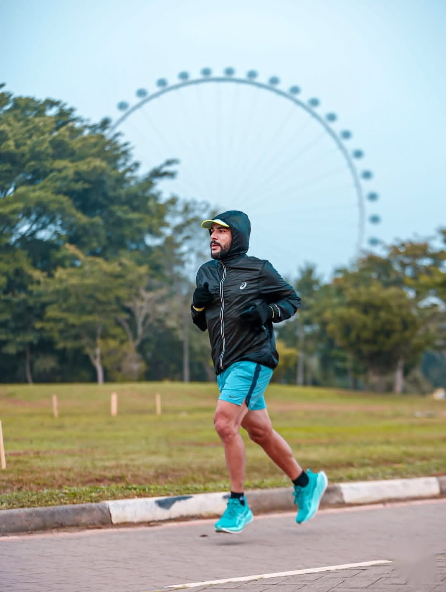

Galeria e Curiosidades
Momentos inesquecíveis e fatos que orgulham o Brasil no cenário esportivo mundial. Cada imagem conta uma história de superação e dedicação.

Atletismo
Velocidade, resistência e superação nos 100m rasos.

Natação
Brasil referência mundial dentro e fora da água.

Basquete
Esporte coletivo que combina força, agilidade e estratégia.

Futebol
A paixão nacional que nos fez pentacampeões mundiais.
Você Sabia?
Fatos curiosos que orgulham o Brasil e impressionam o mundo:
- Único Pentacampeão:O Brasil é o único país a ter vencido a Copa do Mundo cinco vezes: 1958, 1962, 1970, 1994 e 2002.
- Presença Contínua:O Brasil é o único país a ter participado de todas as edições da Copa do Mundo desde 1930.
- Recorde Impassível:César Cielo quebrou o recorde mundial dos 100m livre em 2009 e nenhum nadador conseguiu superá-lo.
- Primeira Olimpíada Sul-Americana:O Rio de Janeiro sediou os Jogos Olímpicos de 2016, os primeiros realizados em solo sul-americano.
- Reinado no Vôlei: A seleção masculina de vôlei conquistou 3 ouros olímpicos consecutivos e 3 títulos mundiais.
Links Oficiais
Aprofunde seu conhecimento visitando as organizações oficiais. Os links abaixo abrem em uma nova aba do navegador:
Confederação Brasileira de Futebol (CBF) Confederação Brasileira de Basquete (CBB) Comitê Olímpico do Brasil (COB)